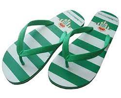
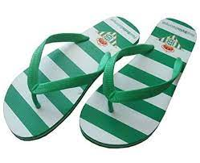
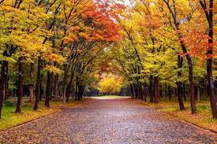
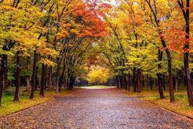

invierno
volver arribaEl invierno es una de las cuatro estaciones de las zonas templadas. Se caracteriza por días más cortos, noches más largas y temperaturas más bajas conforme nos alejamos del ecuador. Es la estación posterior al otoño y que precede a la primavera.
wikipedia verano
verano
primavera
volver arribaEn la primavera, la tierra parece despertar de un letargo traído por el invierno, pues al disiparse las bajas temperaturas e ir sintiendo cada vez más tibieza en el entorno, tanto las plantas como los animales comienzan su período de actividad.
wikipedia
verano
volver arribaLa estación de verano se caracteriza por ser la más cálida del año en cada hemisferio respectivo. Además de altas temperaturas, el ambiente es mucho más seco que durante el período primavera, particularmente en las regiones alejadas de los trópicos y la línea del ecuador.
wikipedia 

otoño
volver arribaEn zonas templadas, el año se compone de 4 estaciones, con una duración de 3 meses cada una. El otoño es la estación que tiene lugar después del verano y antes del invierno. La palabra «otoño» proviene del latín «autumnus», que se traduce como “llegada de la plenitud del año”.
wikipedia 
